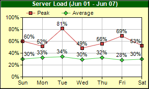

This example demonstrates using symbols to represent data points, and putting data labels on top of the symbols.
Note that in this example, the chart title background is not a solid color but a 1 x 2 pixels pattern.
The following is the command line version of the code in "cppdemo/symbolline". The MFC version of the code is in "mfcdemo/mfcdemo". The Qt Widgets version of the code is in "qtdemo/qtdemo". The QML/Qt Quick version of the code is in "qmldemo/qmldemo".
#include "chartdir.h"
int main(int argc, char *argv[])
{
// The data for the line chart
double data0[] = {60.2, 51.7, 81.3, 48.6, 56.2, 68.9, 52.8};
const int data0_size = (int)(sizeof(data0)/sizeof(*data0));
double data1[] = {30.0, 32.7, 33.9, 29.5, 32.2, 28.4, 29.8};
const int data1_size = (int)(sizeof(data1)/sizeof(*data1));
const char* labels[] = {"Sun", "Mon", "Tue", "Wed", "Thu", "Fri", "Sat"};
const int labels_size = (int)(sizeof(labels)/sizeof(*labels));
// Create a XYChart object of size 300 x 180 pixels, with a pale yellow (0xffffc0) background, a
// black border, and 1 pixel 3D border effect.
XYChart* c = new XYChart(300, 180, 0xffffc0, 0x000000, 1);
// Set the plotarea at (45, 35) and of size 240 x 120 pixels, with white background. Turn on
// both horizontal and vertical grid lines with light grey color (0xc0c0c0)
c->setPlotArea(45, 35, 240, 120, 0xffffff, -1, -1, 0xc0c0c0, -1);
// Add a legend box at (45, 12) (top of the chart) using horizontal layout and 8pt Arial font
// Set the background and border color to Transparent.
c->addLegend(45, 12, false, "", 8)->setBackground(Chart::Transparent);
// Add a title to the chart using 9pt Arial Bold/white font. Use a 1 x 2 bitmap pattern as the
// background.
int pattern[] = {0x004000, 0x008000};
c->addTitle("Server Load (Jun 01 - Jun 07)", "Arial Bold", 9, 0xffffff)->setBackground(
c->patternColor(IntArray(pattern, 2), 2));
// Set the y axis label format to nn%
c->yAxis()->setLabelFormat("{value}%");
// Set the labels on the x axis
c->xAxis()->setLabels(StringArray(labels, labels_size));
// Add a line layer to the chart
LineLayer* layer = c->addLineLayer();
// Add the first line. Plot the points with a 7 pixel square symbol
layer->addDataSet(DoubleArray(data0, data0_size), 0xcf4040, "Peak")->setDataSymbol(
Chart::SquareSymbol, 7);
// Add the second line. Plot the points with a 9 pixel dismond symbol
layer->addDataSet(DoubleArray(data1, data1_size), 0x40cf40, "Average")->setDataSymbol(
Chart::DiamondSymbol, 9);
// Enable data label on the data points. Set the label format to nn%.
layer->setDataLabelFormat("{value|0}%");
// Output the chart
c->makeChart("symbolline.png");
//free up resources
delete c;
return 0;
}
© 2023 Advanced Software Engineering Limited. All rights reserved.